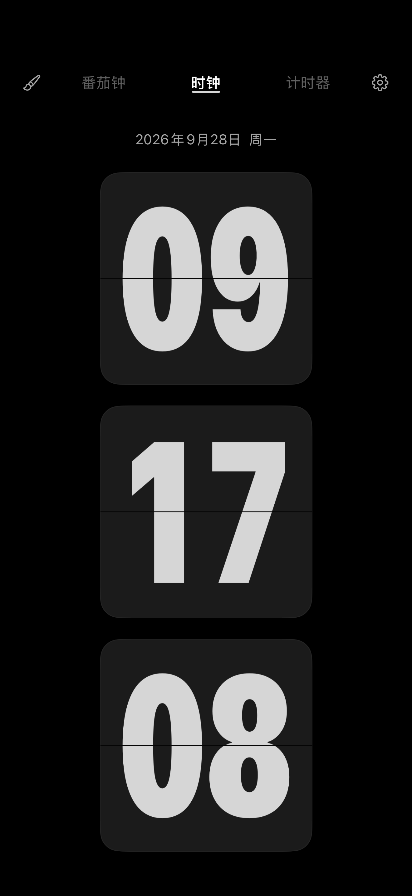

翻页时钟Flip clock
清晰的时、分、秒，支持竖屏、横屏、12/24 小时制和手动时区。Clear hours, minutes and seconds, portrait and landscape layouts, 12/24-hour time and a choice of time zones.
PlainTick Flip Clock
安静的翻页时钟，配上日常计时与专注工具。
为你的桌面，也为你的每一天。A quiet flip clock with everyday timers and focus tools.
For your desk, and for your day.
准备上架 · 支持 iPhone 与 iPadComing to the App Store · iPhone and iPad
了解功能Explore features
让时间回归简单A simpler view of time
清晰的时、分、秒，支持竖屏、横屏、12/24 小时制和手动时区。Clear hours, minutes and seconds, portrait and landscape layouts, 12/24-hour time and a choice of time zones.
从经典到白描、几何与手写，深浅配色让时间融入桌面。Choose classic, outline, geometric and handwritten digits in dark and light styles.
正计时、倒计时、目标时间和番茄钟，支持开始、暂停、继续与重置。Count up, count down, track a target date or use a Pomodoro timer, with pause, resume and reset.
经典、紧凑与月历布局。秒数跟随 App 设置；显示频率由系统管理。Classic, compact and calendar layouts. Seconds follow the app setting; display timing is managed by iOS.
可选天气、夜间变暗、背景音、闹钟和计时结束通知。Optional weather, night dimming, ambient audio, alarms and timer completion notifications.
支持 iOS / iPadOS 17 及以上版本，提供 22 种语言、28 个地区变体。无需注册账号。Requires iOS / iPadOS 17 or later. Available in 22 languages with 28 locale variants. No account required.